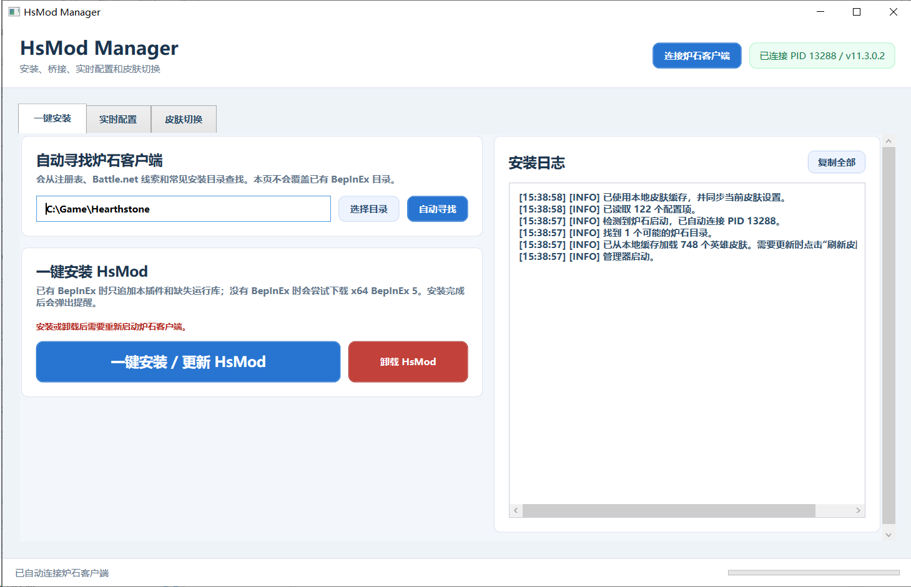
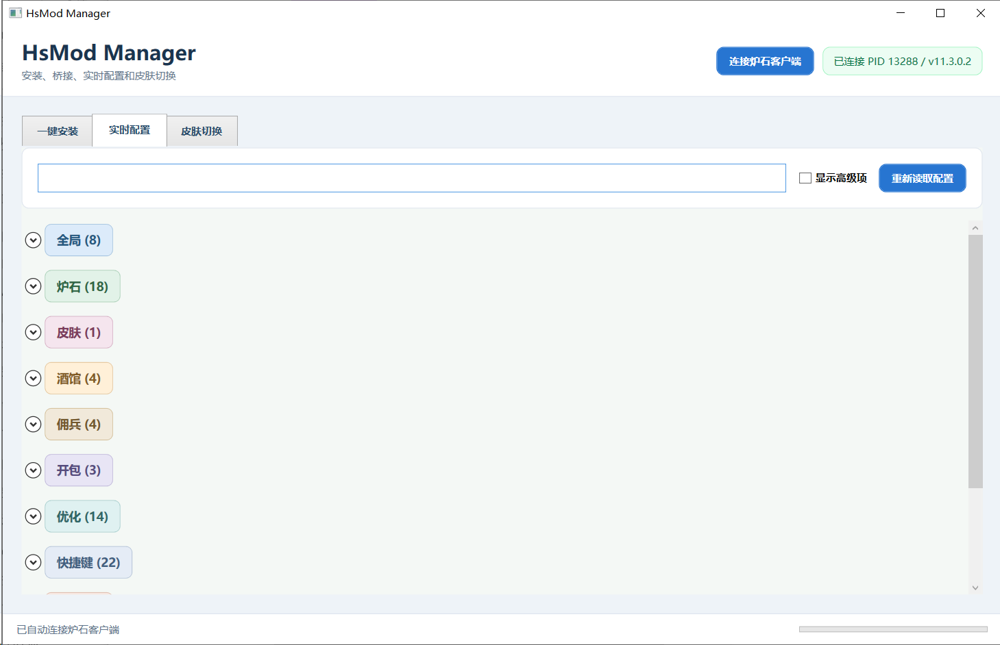
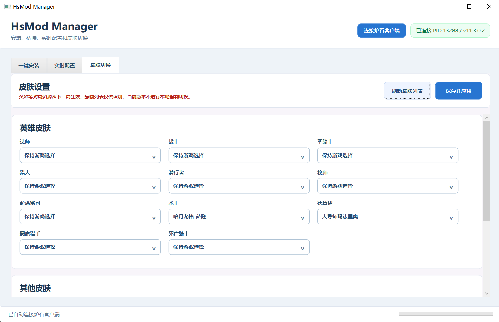

HsMod 全金插件
保姆级使用教程
完整解压、安装插件、开启全金、切换皮肤，照着红圈操作即可。
① 完整解压
② 一键安装
③ 开启全金
第一件事：不要在 ZIP 压缩包里直接运行。请先“全部解压”，再双击 HsModManager.exe；首次启动按提示输入 8 位卡密。
1
一键安装插件
安装或更新前先完全退出炉石，避免正在使用的插件文件被锁定。
- 点“自动寻找”，找不到再手动“选择目录”。
- 确认是炉石根目录，点“一键安装 / 更新”。
- 启动炉石；右上角变成绿色“已连接”即成功。

1 3
2
开启“全金”效果
先确保右上角显示已连接，再按下面的设置进入。
- 打开“实时配置”页。
- 点击“炉石（18）”展开该分组。
- 找到“金卡特效”，选择“全部生效”。

1 2金卡特效
强制金卡特效
强制金卡特效
全部生效
完成：进入对局后，友方和对手卡牌都会按全金效果显示。
3
按需切换英雄皮肤
这是可选步骤；不想换皮肤就保持“保持游戏选择”。
- 打开“皮肤切换”页。
- 在对应职业下拉框选择皮肤。
- 点“保存并应用”，下一局生效。

1 2遇到问题先看这里
- 一直未连接：先启动炉石；刚安装/更新过插件时，完整退出炉石后重新启动。
- 设置没变化：确认右上角为绿色“已连接”，再点“重新读取配置”；部分效果需下一局或重启炉石。
- 管理器打不开：确认已经完整解压，并保留 EXE、Payload、TutorialAssets 在同一目录结构中。